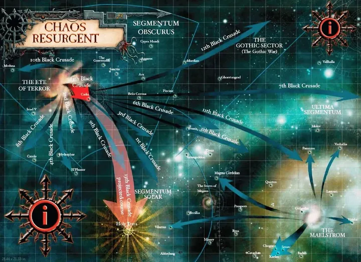
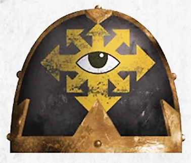
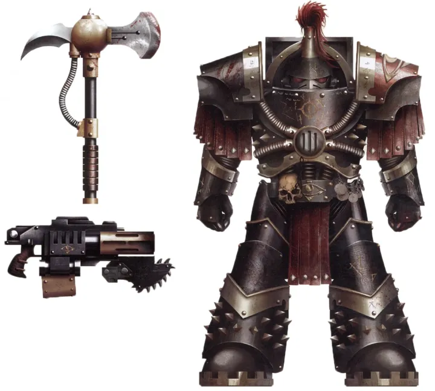
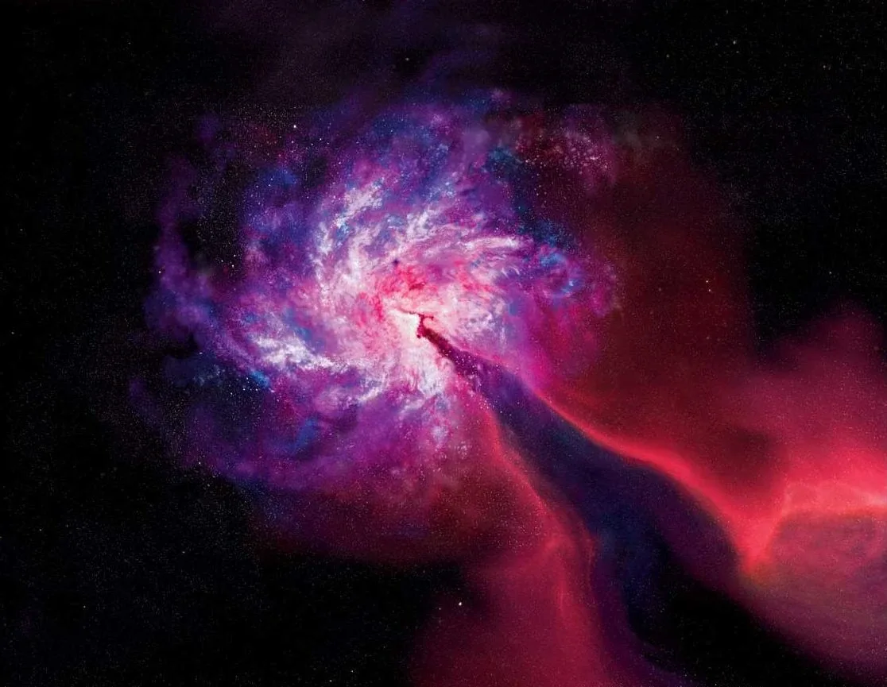

01ภาพรวม

ทายาทของ Horus ภายใต้ Abaddon the Despoiler — Legion ที่เป็นหัวหอกของ Chaos มาหมื่นปี
02ต้นกำเนิด
เดิมคือ Luna Wolves (ขาว) แล้ว Sons of Horus (เขียว) หลัง Horus ตาย Legion แตกกระจายและถูกโจมตีจาก Legion อื่นใน Eye of Terror Abaddon กลับมารวบรวม ทำลายร่าง (และโคลน) ของ Horus ไม่ให้ใครใช้ แล้วให้ทาเกราะเป็นสีดำไว้ทุกข์และแก้แค้น กลายเป็น Black Legion
03เนื้อเรื่องเจาะลึก
จาก Luna Wolves สู่ Black Legion
Legion ที่ 16 เดิมชื่อ Luna Wolves แล้วเปลี่ยนเป็น Sons of Horus หลังการตายของ Horus Legion แตกพ่ายในสงครามภายใน Eye of Terror และร่างของ Horus ถูก Emperor's Children ขโมยไปโคลน Abaddon ทำลายร่างและโคลนเหล่านั้น แล้วทาเกราะเป็นสีดำเพื่อไว้อาลัยความล้มเหลว ตั้งชื่อใหม่ว่า Black Legion
13 Black Crusades
ตลอดหมื่นปี Abaddon บุกออกจาก Eye of Terror 13 ครั้ง หลายครั้งดูเหมือนล้มเหลว แต่นักวิเคราะห์เชื่อว่าทุกครั้งมีเป้าหมายลับ — ทั้งหมดนำไปสู่การทำลาย Cadia และ Blackstone Fortresses ในครั้งที่ 13
04ยุค 30K — ในยุค Great Crusade และ Horus Heresy

ยุค 30K เป็นหัวหอกของ Great Crusade ภายใต้ Horus มีสภา Mournival ที่ Abaddon เป็นหัวหน้า — ทหารที่ภักดีอย่าง Garviel Loken ถูกกำจัดที่ Isstvan III
ดูภาพรวมยุค 30K ทั้งหมดที่ เนื้อเรื่องยุค 30K และความต่างของสองยุคที่ เปรียบเทียบ 30K vs 40K
05นิสัยและวัฒนธรรม
- ภักดีต่อ Abaddon และ 'Chaos Undivided' มากกว่าเทพองค์ใดองค์หนึ่ง
- รับนักรบจาก Warband อื่นเข้าร่วมมากมาย
- ถือว่าการชนะจักรวรรดิคือการทำสิ่งที่ Horus ทำไม่สำเร็จ
06จุดที่น่าสนใจ
- Abaddon ถือดาบปีศาจ Drach'nyen และกรงเล็บของ Horus
- ยึด Blackstone Fortress ได้ในสงคราม Gothic War และภายหลังใช้หนึ่งในนั้น (Will of Eternity) พุ่งชน Cadia
07ความสามารถพิเศษ
สิ่งที่ทำให้ Black Legion แตกต่างจากทัพอื่น — ทั้งพลังที่ติดตัวมาทั้งเผ่า/ทัพ และความสามารถของบุคคลสำคัญ
ของทั้งเผ่า/ทัพ

รวมทุก Legion ไว้ใต้ธงเดียว
Black Legion รับนักรบจากทุก Legion ทรยศ จึงมีทักษะหลากหลาย ทั้งพ่อมด นักรบคลั่ง และ Daemon Engine — ความหลากหลายที่ Legion อื่นไม่มี

ไม่บูชาเทพองค์ใดองค์หนึ่ง (Undivided)
Abaddon ใช้พลังของเทพทั้งสี่แต่ไม่ยอมเป็นทาสของเทพองค์ใด — กองทัพจึงรับได้ทั้งผู้บูชา Khorne, Tzeentch, Nurgle และ Slaanesh

Black Crusade
เมื่อ Abaddon ประกาศ Black Crusade Warband จำนวนมหาศาลรวมตัวกันใต้การนำของเขา กลายเป็นกองทัพที่ใหญ่ที่สุดนับตั้งแต่ Horus Heresy
ของบุคคลสำคัญ

Abaddon
Warmaster of Chaosอดีต First Captain ของ Luna Wolves ผู้ที่ Horus ไว้ใจที่สุด ทำลาย Cadia ได้ใน Black Crusade ครั้งที่ 13

Haarken Worldclaimer
ผู้ประกาศแห่ง AbaddonHerald ผู้ประกาศชัยชนะของ Abaddon บนดาวที่พิชิต เสียงของเขาทำให้ศัตรูหวาดกลัว
08หน่วยและบทบาทในกองทัพ
Black Legion ของ Abaddon รวมนักรบจากทุก Legion ทรยศ โครงสร้างจึงเหมือนสภาขุนศึก — Abaddon ปกครองผ่านสภา Ezekarion ที่รวบรวมผู้แข็งแกร่งที่สุด
Warmaster
วอร์มาสเตอร์Abaddon the Despoiler ผู้สืบทอดตำแหน่งจาก Horus นำ Black Crusade 13 ครั้งจนทำลาย Cadia ได้
Ezekarion
เอเซการิออนสภาผู้นำสูงสุดของ Black Legion เช่น Haarken Worldclaimer (ผู้ประกาศ), Iskandar Khayon (พ่อมด), Falkus Kibre

Chosen of Abaddon
โชเซนของ Abaddonนักรบคัดสรรซึ่งส่วนใหญ่มาจาก Sons of Horus เดิม สวมเกราะดำขอบทอง

Terminator Chosen
เทอร์มิเนเตอร์องครักษ์ Terminator ของ Abaddon สืบทอดจาก Justaerin แห่ง Sons of Horus

Sorcerer (Black Legion)
ซอร์เซอเรอร์พ่อมดหลายสำนักทำงานให้ Abaddon ที่โด่งดังคือ Iskandar Khayon ผู้บันทึกประวัติ Black Legion
หน่วยทั่วไปของ Chaos Space Marines (Sorcerer, Warpsmith, Dark Apostle ฯลฯ) ดูได้ที่ หน่วยและบทบาทของ Chaos Space Marines
09วีรกรรมและเหตุการณ์สำคัญ
ก่อตั้ง Black Legion
Abaddon ทำลายร่างของ Horus และเปลี่ยนสี Legion
12th Black Crusade (Gothic War)
ยึด Blackstone Fortress และใช้พลังของมันทำลายระบบดาว Tarantis
13th Black Crusade
Cadia แตกสลาย เกิด Great Rift
War of Nightmares (Vigilus)
Abaddon บุกดาว Vigilus ที่อยู่ปากทางผ่าน Great Rift แต่ยึดไม่สำเร็จ
10ตัวละครสำคัญ
Abaddon the Despoiler
Warmasterอดีต First Captain ของ Horus

Ezekyle Abaddon (ยุค 30K)
First Captain แห่ง Luna Wolvesสมัยยังรับใช้จักรวรรดิ
11ยุค 40K — สหัสวรรษที่ 41
ตลอดหมื่นปี Black Legion นำ Black Crusade 13 ครั้งผ่าน Cadian Gate และในที่สุดก็ทำลาย Cadia ได้สำเร็จ
12เนื้อเรื่องล่าสุด (Era Indomitus / M42)
Abaddon เป็นผู้ครองอำนาจสูงสุดใน Imperium Nihilus เดินหน้าตามแผน Crimson Path และร่วมมือกับ Vashtorr ในเหตุการณ์ Arks of Omen
หลังการเกิด Great Rift ปฏิทินของจักรวรรดิคลาดเคลื่อน เหตุการณ์ยุคปัจจุบันจึงมักระบุเพียง 'M42' ไม่มีปีที่แน่นอน
13แกลเลอรี


